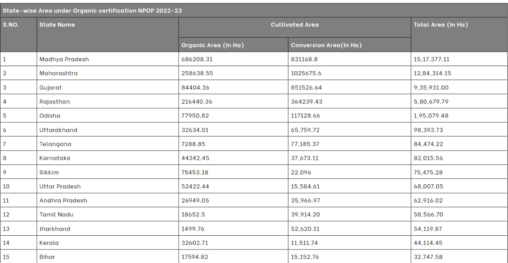

Introduction
INTRODUCTION:-In an age marked by environmental uncertainty and escalating concerns over food security,
the imperative for sustainable agricultural practices has never been clearer. As we confront the
challenges posed by climate change, resource depletion, and biodiversity loss, the traditional model of
farming, reliant on chemical inputs and intensive monoculture, reveals its inherent vulnerabilities. In
its place, a new vision emerges – one rooted in the principles of sustainability, resilience, and
harmony with nature.
Welcome to "Green Agriculture: Sowing the Seeds of Sustainable Farming." In this book, we embark on a
journey to explore the transformative potential of sustainable agriculture – a paradigm shift that is
reshaping the way we produce food, steward the land, and nourish communities.
At its core, green agriculture represents a departure from conventional farming practices, which often
prioritize short-term gains over long-term sustainability. Instead, it embraces a holistic approach that
seeks to optimize agricultural productivity while minimizing environmental impact and promoting social
equity. From reducing reliance on synthetic fertilizers and pesticides to fostering biodiversity and
soil health, the principles of green agriculture are as diverse as the landscapes they inhabit.
Throughout this book, we will delve into the multifaceted dimensions of sustainable farming, examining
the principles, challenges, and innovations driving this global movement. Drawing upon a wealth of
research, case studies, and firsthand experiences, we will uncover the tangible benefits and profound
implications of adopting a more regenerative approach to agriculture.
We will explore the role of agroecology in revitalizing degraded landscapes, the promise of precision
farming in optimizing resource use, and the potential of agroforestry in enhancing resilience to climate
change. From rooftop gardens in urban centers to community-supported agriculture initiatives in rural
villages, we will shine a light on the diverse array of practices and initiatives that embody the spirit
of sustainability.
But green agriculture is not merely a technical endeavor – it is a philosophy, a way of seeing the
world, and a call to action. It challenges us to rethink our relationship with the land, to recognize
the interconnectedness of ecological, social, and economic systems, and to cultivate a future where
agriculture is in harmony with the planet's ecosystems.
As we embark on this journey together, let us sow the seeds of sustainable farming – nurturing not only
the soil beneath our feet but also the communities that depend upon it. For in the fields of green
agriculture, we find not only the promise of abundance but also the resilience to weather the storms
that lie ahead.
Advantages
ADVANTAGE:-Certainly! Here are 20 advantages of green agriculture and sustainable farming practices:
- Environmental Conservation: Sustainable farming practices help preserve biodiversity, soil
fertility,
and water quality.
- Reduced Chemical Use: Minimizing the application of synthetic fertilizers and pesticides decreases
environmental pollution and promotes healthier ecosystems.
- Soil Health: Practices such as crop rotation, cover cropping, and organic amendments enhance soil
structure, fertility, and resilience against erosion.
- Water Conservation: Techniques like drip irrigation and rainwater harvesting optimize water usage,
reducing waste and conserving this precious resource.
- Climate Resilience: Sustainable farming methods contribute to mitigating climate change by
sequestering
carbon in the soil and reducing greenhouse gas emissions.
- Diverse Crop Varieties: Supporting diverse crop varieties promotes genetic resilience against
pests,
diseases, and changing environmental conditions.
- Enhanced Food Security: Sustainable farming practices contribute to a more reliable food supply by
promoting crop diversity and reducing dependence on external inputs.
- Improved Nutritional Quality: Organic farming methods often lead to produce with higher nutritional
content due to improved soil health and reduced chemical residues.
- Local Economic Development: Green agriculture fosters local economies by supporting small-scale
farmers
and encouraging community-based food systems.
- Reduced Energy Dependency: Sustainable farming techniques such as agroforestry and integrated pest
management reduce the need for fossil fuel-based inputs, decreasing energy consumption.
- Pollinator Protection: Practices that minimize pesticide use and provide habitat for pollinators
such as
bees and butterflies contribute to their conservation.
- Preservation of Indigenous Knowledge: Sustainable farming methods often incorporate traditional
knowledge and practices, preserving cultural heritage and promoting intergenerational learning.
- Water Quality Improvement: By reducing runoff and soil erosion, sustainable farming practices help
maintain and improve water quality in rivers, lakes, and aquifers.
- Rural Development: Investing in sustainable agriculture creates employment opportunities in rural
areas
and helps revitalize local economies.
- Resilient Supply Chains: Diverse farming practices and local food networks increase the resilience
of
food supply chains against disruptions caused by climate events or market fluctuations.
- Reduced Food Waste: Sustainable farming practices often lead to reduced food waste by promoting
efficient resource use and encouraging local consumption.
- Ecosystem Restoration: Adopting regenerative agricultural practices can contribute to the
restoration of
degraded ecosystems, enhancing their biodiversity and resilience.
- Adaptation to Climate Change: Sustainable farming methods help farmers adapt to climate change by
diversifying crops, improving soil health, and enhancing water management practices.
- Carbon Sequestration: Practices such as agroforestry, cover cropping, and no-till farming can
sequester
carbon in the soil, mitigating the effects of climate change.
- Long-Term Viability: By maintaining the health of natural resources and ecosystems, sustainable
farming
practices ensure the long-term viability of agriculture for future generations.
- These advantages highlight the multifaceted benefits of green agriculture and the importance of
transitioning towards more sustainable farming practices.
About Green Agriculture
ABOUT:-"Green Agriculture: Sowing the Seeds of Sustainable Farming" embodies a vision for
agricultural
practices that prioritize environmental stewardship, social equity, and economic viability. This
concept
emphasizes the adoption of farming methods that maintain or enhance the health of ecosystems,
conserve
natural resources, and support the well-being of farming communities.
At its core, green agriculture seeks to minimize the negative impacts of farming on the environment
while maximizing the benefits for both present and future generations. It recognizes the
interconnectedness of ecological, social, and economic factors in agricultural systems and aims to
strike a balance that promotes resilience and sustainability.
Key principles of green agriculture include:
Environmental Conservation: Prioritizing practices that conserve soil, water, and biodiversity,
while
minimizing pollution and greenhouse gas emissions.
Resource Efficiency: Optimizing the use of inputs such as water, energy, and nutrients to reduce
waste
and enhance productivity.
Regenerative Practices: Emphasizing techniques that build soil health, enhance carbon sequestration,
and
promote ecosystem restoration.
Community Engagement: Fostering collaboration and partnerships among farmers, consumers,
policymakers,
and other stakeholders to promote sustainable food systems and social equity.
Innovation and Adaptation: Encouraging research, education, and innovation to develop and promote
new
technologies and practices that advance sustainability goals.
Economic Viability: Supporting viable livelihoods for farmers and rural communities through fair
wages,
access to markets, and diversified income streams.
Resilience to Climate Change: Building agricultural systems that are resilient to climate
variability
and extreme weather events through adaptive management practices.
"Green agriculture" encompasses a range of approaches, including organic farming, agroecology,
permaculture, conservation agriculture, and regenerative agriculture, among others. While specific
practices may vary depending on local conditions and contexts, the overarching goal remains the
same: to
cultivate a more sustainable and equitable food system that nourishes both people and the planet.
By sowing the seeds of sustainable farming through green agriculture, we can nurture healthier
ecosystems, empower farming communities, and cultivate a more resilient and prosperous future for
all.
Some Related Information
- Which state has highest organic farming in India?
- Total production volume of organic farms in India FY 2022,
by leading state. In fiscal year 2022,
the state of Madhya Pradesh in India has the highest total production
volume from organic farms at 1.4 million metric tons. In contrast,
Kerala has a total production volume of about 31 thousand metric tons in India.
- Which state is 100% organic farming?
- "SIKKIM" became India's first and only state to proclaim itself organically in 2016.
It was not simple for Sikkim to shift to a 100 per cent organic state.
The farms are modest and numerous, located on the
Himalayas' terraced and steep slopes
- What are the methods of organic farming in India?
- The principal methods of organic farming include crop rotation,
green manures and compost,
biological pest control, and mechanical cultivation
